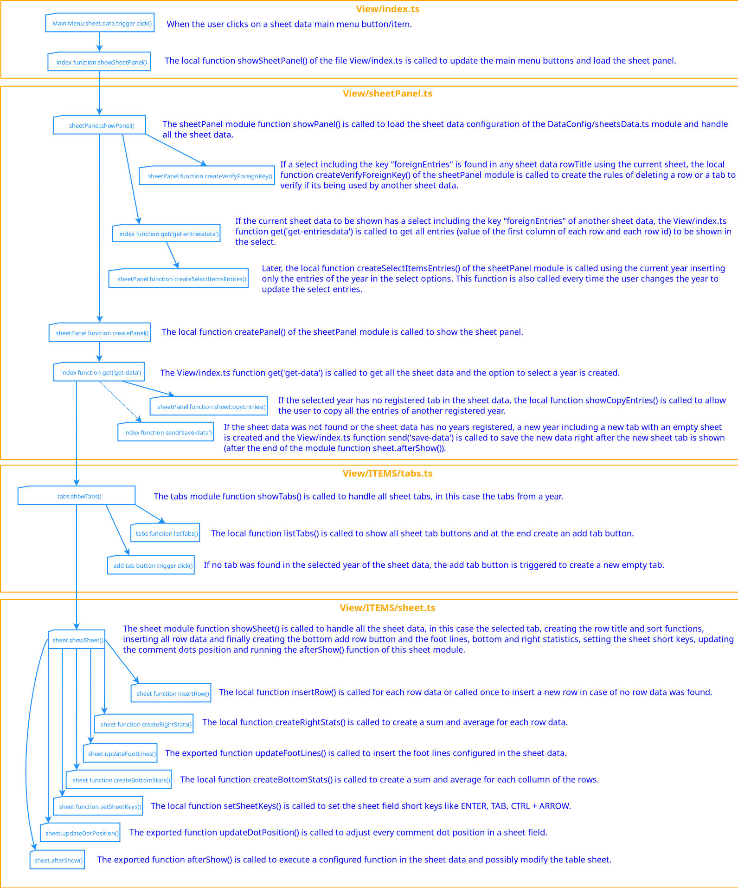
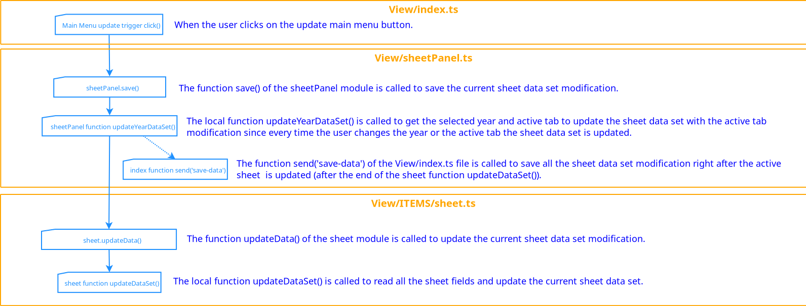
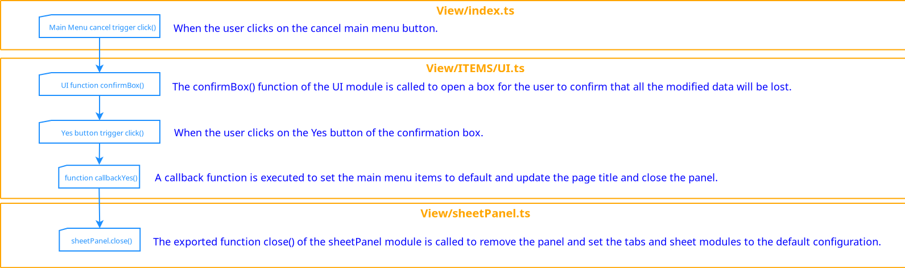
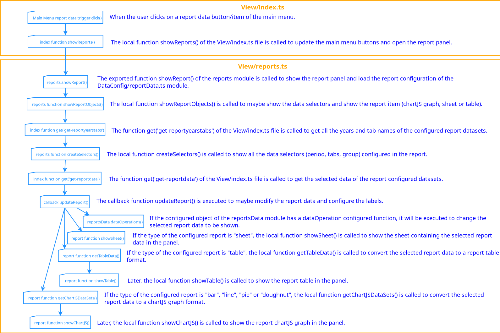
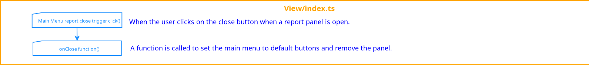
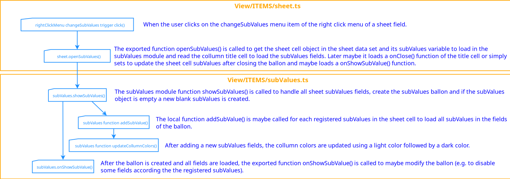
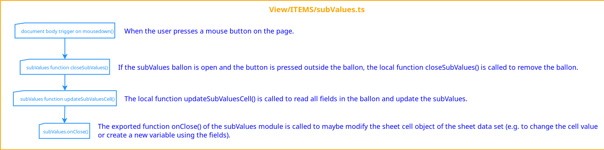

<!DOCTYPE html>
<html>
  <head>
    <meta charset="UTF-8">
    <!-- https://developer.mozilla.org/en-US/docs/Web/HTTP/CSP -->
    <meta http-equiv="Content-Security-Policy" content="script-src 'self' 'unsafe-inline' ">
    <meta http-equiv="X-Content-Security-Policy" content="default-src 'self'; script-src 'self' ">
    <link rel="stylesheet" href="./files/bootstrap.min.css">
    <script src="./files/jquery-3.5.1.min.js"></script>
    <script src="./files/bootstrap.min.js"></script>
    <title>Documentation</title>
  </head>
  <body style="text-align:center">
    <div class="btn-group mt-2" role="group" aria-label="Basic example" id="tabs"></div><BR>
    <div class="btn-group mt-1" role="group" aria-label="Basic example" id="folder"></div><BR>
    <div class="btn-group mt-1" role="group" aria-label="Basic example" id="subfolder"></div><BR>
    <div id="docBody" class="mt-3"></div>
    <script type="text/javascript">
        $('<div/>', {class: 'alert alert-info', role: 'alert'}).html('You will need to have the Node Package Manager (NPM) installed to run, follow the instructions in <a href="https://docs.npmjs.com/downloading-and-installing-node-js-and-npm">NPM Installation</a>. The latest tested working versions are node v24.0.2 and npm 11.4.0. To create your App you just need to download this app source code, run the command "npm install" in the extracted app folder, change the package.json file with your title and descriptions, change the configuration files in the src/DataConfig/ folder, replace the icon.png image to update the App icon and later run the command "npm build-all" in the app folder to get the created .deb, .rpm, .exe, .snap and .AppImage files in the out/ folder. You may also run the command "npm start" to test you App.').appendTo('#docBody')
      function architecture(){
        $('<div/>', {class: 'alert alert-info', role: 'alert'}).html('All the modules in this architecture are inside the folder "src" as a TypeScript. You must run the "tsc" command in the app dir to update your configuration and make the JavaScript files into the dir "dist-js" which will be included in the Electron Package. Note: when you run "npm start" or "npm make" or other package script It\'s running "tsc" command automatically.').appendTo('#docBody')
        var div = $('<div/>', {style: 'overflow:auto;width:100%;'}).appendTo('#docBody')
        $("", {src: './files/architecture.png'}).appendTo(div)
      }
      var main = {abstract: 'The start script for Electron app. It makes the communication between Control/controls.ts module and View/index.ts. It creates the listenings ipcMain.on() to execute the controls functions and creates the main Browser Window (chrome-sandbox) that loads the View/index.html file which includes the View/index.ts. It also uses getCookie and setCookie functions to save the interface configurations theme, language, textSize and windowPosition.',
        variables: {
          my_diaglanguage: 'An object that contains the language definitions of the ask quit confirmation.'
        },
        constants: {
          ipcMain: 'The electron module used to listen to the View user interface an perform a "server side" operation.',
          controls: 'The module in Control/controls.ts used to control the read/write data operations (e.g. access, allowed values, allow operation?, etc).',
          baseURL: 'An URL string used to save the cookie variables.',
          listControls: 'An array that contains a list of listening for the <span class="text-success"><b>ipcMain.on()</b></span> function to redirect to a Control function in controls module.',
        },
        functions: {
          getLanguage: 'Returns all the language definitions from <span class="text-success"><b>Controls.getLanguague()</b></span> based on saved cookie language configuration.',
          getCookie: 'Returns the saved cookie variable that currently is used by <b>theme</b>, <b>fontSize</b>, <b>langLocale</b> and <b>windowPosition</b> configuration variables.',
          setCookie: 'Saves a cookie variable that currently maybe <b>theme</b>, <b>fontSize</b>, <b>langLocale</b> and <b>windowPosition</b>.',
          createWindow: 'Creates the main Browser Window (chrome-sandbox) that loads the View/index.html file and set the window size and position based on saved cookie windowPosition configuration. The function also sends the language definitions, the text size and theme configuration based on saved cookie variables to the window after It\'s loaded. The function also creates the confirmation box when the user try to close the Browser Window.',
        },
        events: {
          'ipcMain.on("change-theme")': 'A listening to the View interface that saves a cookie variable that contains the user chosen theme and returns the theme value.',
          'ipcMain.on("change-textsize")': 'A listening to the View interface that saves a cookie variable that contains the user chosen text size and returns the text size value.',
          'ipcMain.on("change-language")': 'A listening to the View interface that saves a cookie variable that contains the user chosen language and return the current language definitions.',
        }
      }
      var calc = {abstract: 'A module used to calculate formula expressions.', requiredBy: 'View/ITEMS/sheetField.ts to calculate sheetField value and Model/selector.ts to calculate field value and perform operations.',
        exports: {'calc(value)': 'Receives a formula starting with "=" (e.g. =(5+100)/2), uses the function <span class="text-success"><b>solveExpression</b></span> to get the result of each operation respecting the round brackets priority "()" and returns the result of all operations or the value "#!calcerror" in case of a formula error.'},
        functions: {solveExpression: 'Receives an expression with 2 operands and an operator (e.g. 2+2, 5*10) and returns the result.'},
      }
      var db = {abstract: 'A module used to define database operations including read/write collections or json files. The data may be saved on local config dir on json files using the "localdb" variable or on a MongoDB server using the "mondodb" variable. Currently It\'s only using the localdb. Operations may be find/findOne/aggregate/bulkWrite/deleteOne. The operation find returns and array of objects. The operation findOne returns the first object found. The operation aggregate joins 2 objects from 2 collections or json files based on a matched value. The operation bulkWrite saves a document to a collection or json file. The operation deleteOne deletes the first object found.',
        requiredBy: 'Control/controls.ts module to perform read/write data operations.',
        constants: {selector: 'The module Model/selector.ts used to select, perform operations and/or group the data to be used on reports.'},
        exports: {
          mongodb: 'A variable that was used to create the MongoDB server connection. Currently not being used.',
          localdb: 'A variable that contains a module used to read/write documents to a json file in the local config dir.',
          'listLanguages()': 'A function that returns all the possible languages including the name, abbreviation and picture of each one.',
          'getLanguage(language)': 'A function that receives a language name and returns all the language translations by the selected language.',
          'getLanguageSystem()': 'A function that returns all the language translations by the saved language in the config <span class="text-danger">system.json</span> file.',
          'getSystemConfig()': 'A function that returns the system config saved in the config collection/json file.',
          'registerSystemConfig(config)': 'A function that writes the system config in the config collection/json file.',
          'deleteSystemConfig(id)': 'A function that deletes the system config in the config collection/json file searching for It\'s ID.',
          'getData(collection)': 'A function that returns the dataset saved in a collection/json file.',
          'getReportData(SelectorData[])': 'A function that receives an array of selectors data and returns the joined datasets of multiple collection/json files to be used in a report. The selectors data are used to get a specific period data and to group by a period of year, bimester, quarter or semester. The selectors data are also used to get only specific tabs from the datasets and to group data by each entry, tabs or datasets.',
          'deleteData(collection, id)': 'A function that deletes an object of a collection/json file searching for It\'s ID.',
          'saveData(collection, dataset)': 'A function that saves the dataset in a collection/json file.',
          'getStock(ticker, market)': 'A function that returns an stock object saved in the "stockPrice" collection/json file searching for It\'s ticker and market values.',
          'registerStock(stock)': 'A function that saves an stock object in the "stockPrice" collection/json file.',
          'deleteStock(id)': 'A function that deletes an stock object saved in the "stockPrice" collection/json file searching for It\'s ID.'
        },
        functions: {joinDataSets: 'Joins multiple tabs from multiple datasets of different collections/json files and may calculate the sum total for each collumn of the joined tabs. If 2 or more datasets have the same tab name, all the rows will be joined in a unique tab name.'},
      }
      var localdb = {abstract: 'A module that performs find/findOne/aggregate/bulkWrite/deleteOne type operations in a json file of the local user data config dir.',
        requiredBy: 'Model/db.ts module to perform read/write json files.',
        exports: {
          'connection(collection, type, arg, arg2?)': 'A function that receives a collection/json file name and a type operation and returns the result of the operation including error, number of deleted objects, number of inserted objects, list of IDs of the inserted objects and/or the selected data. The <b>arg</b> variable may be an object with <b>_id</b> variable to filter in case of deleteOne, a list of objects to insert in case of bulkWrite, an object with a specific filter to search for in case of find/findOne or an object to combine multiple collections/json files in case of aggregate. The <b>arg2</b> variable may be an object with <b>projections</b> variable in case of find/findOne used to return only the specific variables from selected objects, value "0" is used to exclude the variable from search result objects and value "1" is used to include the variable in the search result objects.',
          userDataPath: 'A variable that saves the local user data config dir path used to save/read files.',
          appPath: 'A variable that saves the current dir of the executing app used to copy the default <span class="text-danger">languages.json</span> and <span class="text-danger">system.json</span> files to local config dir in case of first time of execution or a change in <span class="text-danger">languages.json</span>.'
        },
        functions: {
          deleteOne: 'Deletes an object from a collection/json file searching for the filter <span class="text-primary">{_id: "value"}</span> in case of deleteOne operation and returns the number of deleted objects and/or an error.',
          make_id: 'Returns a string id of 24 caracters used to insert a new object to a collection/json file.',
          insertOne: 'Inserts one or more objects to a collection/json file in case of bulkWrite operation and returns the number of inserted objects and list of inserted ids and/or an error.',
          aggregate: 'Returns the result objects of 2 collections/json files based on a macth in case of aggregate operation.',
          find: 'Returns a list of objects or one object from a collection/json file in case of the find/findOne operations.',
          get_entries: 'Used by the <span class="text-success"><b>find</b></span> function to filter the objects to return based on the <b>arg</b> variable and may filter the result objects variables to return based on <b>projections</b> in the <b>arg2</b> variable.'
        },
      }
      var selector = {abstract: 'Module used to select some data and perform some calculations and maybe group the data to be shown in a report.',
        requiredBy: 'Model/db.ts module to perform data selection and operations.',
        constants: {calcField: 'The module Common/calc.ts used to calculate formula expressions.'},
        functions: {
          getRowConnection: 'Receives the object <b>connection</b> of the selector, the row data and the join collection dataSet to discover which row data of the join collection will be used to join and returns "null" if the join row data was not found or returns the row data of the join collection if it was found.',
          applyFilter: 'Receives a field value, a condiction and a value to be compared and returns "true" if the condiction was satisfied or "false" if the condiction was not satisfied. The condiction value must be "equal", "different", "greater", "smaller", "greaterOrEqual" or "smallerOrEqual".',
          filter: 'Receives the array of objects <b>filters</b> of the selector, the row data and maybe the join collection row data to apply some filters and remove the row data that is unecessary to show in the result data, that means all the rows must satisfy these filters to be shown (e.g. <span class="text-primary">[ {<b>field</b>: "join.name", <b>condiction</b>: "different", <b>value</b>: ""}, {<b>field</b>: "collection.1", <b>condiction</b>: "greater", <b>value</b>: 0} ]</span>). Each filter in the array <b>filters</b> will use the function <span class="text-success"><b>applyFilter</b></span> to verify if it was satisfied. Using the condictions "greater", "smaller", "greaterOrEqual", "smallerOrEqual" the filter will only be applied if a value of type number is found and to remove the empty values you have to use the condiction different than "". If the rows does not satisfy all the filters it will be added to a list of rows to be removed later. The function returns the updated list of rows to be removed.',
          getSelectorFields: 'Receives the array <b>fields</b> of the selector, the row data of collection and join collection dataSet to save the named fields in the last cell of the row data of the collection dataSet as a variable of the given field name to be used later and returns the row data of the collection dataSet updated.',
          getUniqueField: 'Receives the <b>unique</b> variable of the selector, the collection and join collection row data that may be used to group multiple rows into one row as they have the same name and each value of the unique field must be separated by a colon ":" (e.g. <span class="text-primary">tabName:collection._id</span> will not group any row and <span class="text-primary">tabName:collection.0</span> will group every row that has the same value in the first cell and belongs to a tab that has the same name). The function firstly uses the function <span class="text-success"><b>getSelectorFields</b></span> to save the necessary variables and later saves the variable <b>uniqueField</b> in the last cell of the collection row data and returns the updated row data.',
          updateFields: 'Receives the array <b>updateFields</b> of the selector, the collection row data and the join collection row data to replace one collection field value by by a join collection field value (e.g. <span class="text-primary">{{<b>field</b>: "collection.0", <b>update</b>: "join.name"}}</span> to replace an ID that points to a join collection row in the first value by a field named of the join collection row) and returns the collection row data updated.',
          sliceData: 'Receives the row to be sliced, the start and end date positions and some date variables to slice the row data remaining only the first cell and the months between the <b>startDate</b> and <b>endDate</b> and also the months between the start and end date positions of <b>datePos</b> or <b>joinDatePos</b> and returns the sliced row data.',
          getValue: 'Receives a row cell and maybe a variable name and try to find the variable name value inside the cell or try to find the default variable <b>value</b> if there is no variable name. Uses the module function <span class="text-success"><b>calcField.calc</b></span> to get the result number in case of the variable value is a formula expression starting with "=". The function returns the value (maybe calculated) found or "null" if no variable was found in the cell.',
          getFirstOrLastField: 'Receives a row, variable name, and a position to get the value of the variable field of <b>fieldOperations</b> in the first month cell, last month cell, first not null month cell or last not null month cell of a year using the function <span class="text-success"><b>getValue</b></span> and returns the field variable value.',
          getFieldValues: 'Receives a field name of <b>fieldOperations</b> and returns the separated field position, field variable to be calculated, field dataSet name, and the entire row the field is in to be used by the function <span class="text-success"><b>resolveOperations</b></span>. The variable to be calculated of a given cell in <b>field</b> or <b>field2</b> will be the default <b>value</b> or a variable name inside the brackets "[]" right after the position using the functions <span class="text-success"><b>getValue</b></span> or <span class="text-success"><b>getFirstOrLastField</b></span>.',
          applyOperator: ' Receives 2 values of type number, an operator "+", "-", "/", "*" or "^", a operation name and a result row cell to perform the calculation on the values and inserts the result in a variable of the operation name inside the object <b>operations</b> in the result row cell and returns the updated cell.',
          resolveOperations: 'Receives the array <b>fieldOperations</b> of the selector, a row of the collection dataSet and a row of the join collection dataSet to perform some calculations. Uses the functions <span class="text-success"><b>getFieldValues</b></span> and/or <span class="text-success"><b>getValues</b></span> to receive the operators and perform the operations using the function <span class="text-success"><b>applyOperator</b></span>. The rows will be updated adding the object <b>operations</b> in every cell calculated when using the "*" any cell position in the <b>field</b> or <b>field2</b> variables or adding the result object <b>operations</b> in the last cell in case of 2 specific fields. This function returns the rows updated with their operations result.',
          mergeValues: 'Receives a cell to compute and a second cell to save the merged values, that means all the variables inside to first cell will be copied into the second cell in case of a variable of type number except for the variable <b>_id</b>. In case of the variable already exists in the second(merged) cell they will be added and the count <b>variableName-count</b> will be incremented and the <b>variableName-average</b> will be updated as well. Returns the sencond(merged) cell with variables updated.',
          mergeData: 'Receives a row to be grouped by the <b>uniqueField</b> variable created by the function <span class="text-success"><b>getUniqueField</b></span> in the last cell and creates a new row in the <b>mergedDataTabs</b> in case of a new unique name or merge their values using the function <span class="text-success"><b>mergeValues</b></span> in case of the unique field already exists (e.g. all rows of a tab will be grouped as one row in case of the unique name is "tabName"). The function also places the month cells between the positions in the variable <b>datePos</b> in the corresponding positions between the <b>startDate</b> and <b>endDate</b> of the selected period. Returns the <b>mergedDataTabs</b> variable with the row fields updated.',
          getMergedPositions: 'Receives the desired position of the row of a year and returns the merged position in the <b>mergedDataTabs</b> after all months between the <b>startDate</b> and <b>endDate</b> were appended in a single row.',
          groupDataByPeriod: 'Receives the <b>groupByPeriod</b> variable and the row to be grouped and merge their values using the function <span class="text-success"><b>mergeValues</b></span>, that means all the month variables in a period will be added using the function <span class="text-success"><b>getMergedPositions</b></span> to get the corresponding position in the <b>mergedDataTabs</b> row since all years were appended and returns the row with months grouped by a period ("year", "semester", "quarter" or "bimester").',
        },
        exports: {
          'selectData(collection, join_collection, selector)': 'A function that receives a collection dataSet and maybe a second collection dataSet to join and perform operations. The function receives a <b>selector</b> object to select a specific period data and also may select only specific tabs. It may calculate some operations in the data to be shown and later may group it by each unique field (e.g. entry name, tab name or dataSet name) getting the sum and average of a all months variables grouped and maybe group some months by bimester, quarter, semester or year calculating again the sum and average of all variables added.<br>{ul=selector}</div>'
        },
        'ul-selector': {title: 'The selector object variables are:', li: [
          {title: 'startDate', desc: 'includes the start month and start year to start collecting data(e.g. MM-YYYY=<span class="text-primary">01-2025</span>);'},
          {title: 'endDate', desc: 'includes the end month and end year to stop collecting data(e.g. MM-YYYY=<span class="text-primary">12-2025</span>);'},
          {title: 'title', desc: 'a string containing the selected data title;'},
          {title: 'datePos', desc: 'an array of 2 numbers containing the start position and end position of the months in the row (e.g. <span class="text-primary">[1, 13]</span>);'},
          {title: 'collection', desc: 'a string containing the name of the dataSet colletion;'},
          {title: 'showTabs', desc: 'an array of strings containing the names of the tabs of the collection to show/compute;'},
          {title: 'join?', desc: 'an optional string containing the name of a possible dataSet collection to join;'},
          {title: 'joinDatePos?', desc: 'an optional array of 2 numbers containing the start position and end position of the months in the row of the join dataSet colletion in case of using a join collection(e.g. <span class="text-primary">[1, 13]</span>);'},
          {title: 'connection?', desc: 'an optional object containing 1 field from the collection dataSet and 1 field from the join collection dataSet as <b>field</b> and <b>field2</b> variables that must match to join, the fields must have the same value so that all the join fields specified in the <b>fields</b> variable below will be joined to the collection row. The <b>field</b> and <b>field2</b> variables must have the pattern "collection" or "join" to choose which dataSet the field is in followed by a period "." to separate from the position and a number of the field position in the row array or "_id" to get the row id (e.g. <span class="text-primary">{<b>field</b>: "collection.0", <b>field2</b>: "join._id"}</span>);'},
          {title: 'fields', desc: 'an array of objects to name some fields to perform operations including the name and position of the collection/join collection (e.g. <span class="text-primary">{<b>pos</b>: "collection.0", <b>name</b>: "FieldName"}</span>), the <b>pos</b> variable of the fields must have the pattern "collection" or "join" to choose which dataSet the field is in followed by a period "." to separate the number of the field position in the row array and the number of the position itself;'},
          {title: 'updateFields', desc: 'an array of objects to update some collection fields to a new value of a join field specified before, e.g. to update an ID by an entry name. Each object must contain a variable <b>field</b> that will determine which collection field will be updated and a variable <b>update</b> to select a join field name specified before. The <b>field</b> variable must start with "collection." followed by the number of the row array position that will be updated and the <b>update</b> variable must start with "join." followed by a join field name specified in the <b>fields</b> before (e.g. <span class="text-primary">{<b>field</b>: "collection.0", <b>update</b>: "join.EntryName"}</span>);'},
          {title: 'filters', desc: 'an array of objects to apply some condictions to all data and filter which data will be shown. (e.g. <span class="text-primary">{<b>field</b>: "join.FieldName", <b>condiction</b>: "different", <b>value</b>: ""}</span>). The <b>field</b> must start with "collection" or "join" to determine which dataSet the field is in followed by a period "." to separate from the position and finally followed by the number of position of the field in the array row or a name specified in the <b>fields</b> before. The variable <b>condiction</b> may be "equal", "different", "greater", "greaterOrEqual", "smaller" or "smallerOrEqual". The variable <b>value</b> must be a number in case of "greater", "greaterOrEqual", "smaller" or "smallerOrEqual" and will be applied only if the month value has a type number. In case of "equal" or "different" the variable <b>value</b> may be a number, string or array of strings (e.g <span class="text-primary">{<b>field</b>: "collection.0", <b>condiction</b>: "equal", <b>value</b>: ["DesiredName1", "DesiredName2", "DesiredName3"]}</span>);'},
          {title: 'unique', desc: 'a value that will be unique for all entries in the result data and will be used while merging data and may be composed of different values separated by a colon ":" and the values may be "tabName", "dataSet", "year", a field position or a field named before in the <b>fields</b> (e.g. <span class="text-primary">tabName:collection.0</span> means all the rows from different years with the same tab name and the first value equal will be joined appending all the months of the selected period and all the values will be added for each collumn(month), <span class="text-primary">join.EntryName</span> means all the data that has the same EntryName in the join collection dataSet will be joined in a single row, <span class="text-primary">join.FieldName1:join.FieldName2</span> means all the rows from different years and tabs that has the same FieldName1 and FieldName2 in the join collection dataSet will be joined, <span class="text-primary">year</span> means all the rows from different tabs will be joined as a single row for each year, <span class="text-primary">dataSet</span> means all the rows from different tabs and years will be joined as a single row, <span class="text-primary">tabName</span> means all the rows from different years that belongs to a tab with the same name will me joined as a single row);'},
          {title: 'fieldOperations', desc: 'an array of objects used to perform some calculations in the data to show in the report. Each operation must have a string of the operation name as the key index to another object containg the <b>field</b>, <b>field2</b> and <b>operator</b> variables (e.g. <span class="text-primary">{<b>operationName</b>: {<b>field</b>: "collection.*", <b>operator</b>: "/", <b>field2</b>: "join.*"}}</span>). The <b>operator</b> variable must be "+" to add, "-" to subtract, "/" to divide, "*" to multiply and "^" to exponentiate and the <b>field</b> and <b>field2</b> variables must start with "collection" or "join" to determine which collection dataSet the field is in followed by a period "." and later a number of the position of the cell in the row or a name specified in the <b>fields</b> before or any "*" cell that means all the months will be calculated (collection.0/join.0, collection.1/join.1, ...collection.N/join.N). These fields always try to find the variable <b>value</b> inside the cell so in that case the function will divide every month value in the collection by every month value in the join collection. You can specify another variable name to calculate inside brackets "[]" (e.g. <span class="text-primary">{<b>operationName</b>: {<b>field</b>: "collection.*", <b>operator</b>: "/", <b>field2</b>: "collection.*[variableName]"}}</span>) at this case the function will divide every month value in the collection by every month variableName in the cell. All the operation results will be saved in an object <b>operations</b> in every cell in case of use "*" or in the last cell in case of 2 specific fields. You can also reutilize a operation result to calculate another result separating a subValue by a period "." in the cell variable (e.g. <span class="text-primary">{<b>operationName2</b>: {<b>field</b>: "collection.*", <b>operator</b>: "/", <b>field2</b>: "collection.*[operations.operationName1]"}}</span>). You may also utilize the first or last month of each year or the first or last month not null (empty) of each year (e.g. <span class="text-primary">{<b>operationName</b>: {<b>field</b>: "collection.first", <b>operator</b>: "/", <b>field2</b>: "collection.last.notnull"}}</span>);'},
          {title: 'mergeTabs', desc: 'a boolean variable that if is "true" all the data from different years and tabs will be joined in a single tab, that means all the months in the period between the <b>startDate</b> and <b>endDate</b> may be appended in one row and the rows from different tabs will be joined in one tab and some rows may be added depending on the unique value performing a sum of the fields for each collumn(month) and creating the variable <b>variableName-count</b> showing how many month values (or subValues, a variable in an object of the cell) was added in each cell and creating the variable <b>variableName-average</b> saving the average value of the variable in the cell;'},
          {title: 'groupByPeriod', desc: 'a variable that may be used to group all the month values in a row by the periods "bimester", "quarter", "semester" or "year" adding all the variables of the month cells in a period to a single cell. The count number will be updated to the number of months in a period (e.g. 6 months in a semester) multiplied by the number of rows that may be joined as unique (e.g. the number of rows in a tab in case of <b>uniqueField</b> is "tabName") if all the months have a value of type number else the count will be the number of values of type number found in all months and the average will be updated as well;'},
          {title: 'showTotal', desc: 'a boolean variable that if is "true", a row will be inserted at the first position of the result data in case of <b>mergeTabs</b> is "true" and the first cell value of the row is "total" and the others are a sum of each collumn(month/period) value.'}
        ]}
      }
      var controls = {requiredBy: 'main.ts to control the "server side" functions.',
        abstract: 'A module used to control basically the read/write data operations (e.g. access, allowed values, allow operation?, etc).',
        constants: {db: 'The module Model/db.ts used to read/write data operations.'},
        functions: {getZipBase64: 'A function that converts a zip file to base64 and saves a temporary zip file in /tmp and returns the path to the zip file.'},
        exports: {
          systemConfig: 'An object of a system configuration. The <b>userDataPath</b> and <b>appPath</b> variables are obtained in main.ts when creating the Browser Window and the others are saved in <span class="text-danger">system.json</span>. {ul=systemConfig}',
          'getSystemConfig()': 'A function to get the system configuration using the function <span class="text-success"><b>db.getSystemConfig</b></span>, remove the adminPassword and return the systemConfig or an empty object in case of the system config was not found. It also updates the module db.localdb variables <b>userDataPath</b> and <b>appPath</b>.',
          'updateSystemConfig(systemConfig)': 'A function that was used to update the system configuration when the configurationPanel was activated. Currently not being used.',
          'changeAdminPassword(currentpassword, admin_password)': 'A function used to change the admin password when the configurationPanel was activated. Currently not being used.',
          'getAdminPassword()': 'A function used to get the admin password to verify on login when the configurationPanel was activated. Currently not being used.',
          'listLanguages()': 'A function that uses the function <span class="text-success"><b>db.listLanguages</b></span> to return a list all languages and their descriptions.',
          'getLanguage(langLocale)': 'A function that receives the string <b>langLocale</b> and uses the function <span class="text-success"><b>db.getLanguage</b></span> to return the desired language translations in case of it was found or uses the function <span class="text-success"><b>getLanguageSystem</b></span> to return the default system language translations.',
          'getLanguageSystem()': 'A function that uses the function <span class="text-success"><b>db.getLanguageSystem</b></span> to return the default language in <span class="text-danger">system.json</span> and It\'s translations.',
          'getData(collection)': 'A function used to get all the data of a collection dataSet using the function <span class="text-success"><b>db.getData</b></span> and receives a collection name as string and returns the data or an read data error.',
          'getEntriesData(collection)': 'A function used to get only the entries (first values) of a collection dataSet using the function <span class="text-success"><b>getData</b></span> and receives a collection name as string and returns the entries dataSet (empty or not).',
          'verifyForeignKey(collection, year, ids[])': 'A function used to verify if a dataSet row is being used by another dataSet when the user tries to delete a row or an entire tab. The function receives a collection dataSet name, a year and a list of ids in a tab or one row id and uses the function <span class="text-success"><b>getData</b></span> to read the collection dataSet and returns "false" if an id was found in the year of the dataSet or "true" if no id was found.',
          'getReportData(SelectorDB)': 'A function that receives a <b>selectorDB</b> object used to get a selection of some collection dataSets to show in a report using the <b>selector</b> objects in the function <span class="text-success"><b>db.getReportData</b></span> and returns an read data error, the selected data or an empty array. Each <b>selector</b> object is configured in this function according to each <b>dataID</b> adding the date positions, join collection, field names, filters and field operations. {ul=selectorDB}',
          'getReportYearsTabs(dataSets[])': 'A function that receives an array <b>dataSets</b> of dataSet selectors tha uses each <b>dataID</b> variable in the function <span class="text-success"><b>getData</b></span> and later returns only the years and tab names of a dataSet list. It\'s useful in the selectors of the Report Panel to show the tabs and years of multiple dataSets.',
          'saveData(collection, dataSet)': 'A function used to save a dataSet to a collection name that uses the functions <span class="text-success"><b>verifyTickerUnique</b></span> and <span class="text-success"><b>verifyNegativeStockQuantity</b></span> in case of trying to save the "variableStocks" collection dataSet. If the operation is authorized then the function will delete the existing one and save a new dataSet. The function returns "emptyinserted" in case of a new blank dataSet when the <b>empty</b> arg is found, "dataupdated" in case of deleting the existing one and/or saving a new one, "dataundeleted" in case of an error on deleting the existing dataSet or "registerdataerror" in case the dataSet was not saved. The function may also returns "tickernotunique" in case of a duplicated entry ticker and market or "negativestockquantity" in case of any stock has a negative value in quantity in case of a "variableStocks" collection dataSet.',
          'getStock(ticker, market)': 'A function that receives the variables <b>ticker</b> and <b>market</b> to get a stock object using the function <span class="text-success"><b>db.getStock</b></span> and returns the object containg ticker, market and price data or "none" in case of the stock was not found.',
          'registerStock(ticker, market, data)': 'A function that receives the <b>ticker</b>, <b>market</b> and <b>data</b> variables containing the monthly prices to save a new stock object or update an existing one using the functions <span class="text-success"><b>getStock</b></span> and <span class="text-success"><b>deleteStock</b></span> to delete a possibly existing one and the function <span class="text-success"><b>db.registerStock</b></span> to save a new one. The function may return "stockregistered" in case of saving a new one and deleting a possibly existing one, "stockundeleted" in case of an error when trying to delete the existing one or "stockunregistered" in case of an error when trying to save the new one.',
          'deleteStock(id)': 'A function that receives an stock object ID and uses the function <span class="text-success"><b>db.deleteStock</b></span> used to delete a stock object and returns "stockdeleted" in case of a successful deletion or "stockundeleted" in case of an error or the id was not found.',
          'verifyTickerUnique(dataSet)': 'A function used to verify if there is another stock registered in the same year of the given dataSet with the same ticker and market values and returns "true" if there are no ticker and market duplication on the dataSet in the same year and "false" if a duplication was found.',
          'verifyNegativeStockQuantity(dataSet)': 'A function used to verify if there is any stock being registered with a negative quantity at any time while performing the transactions and returns "false" if no negative quantity was found and "true" if at least one of the stocks has a negative quantity.',
          'backupData()': 'A function used to get all json files used by the app in the config dir (<b>systemConfig.userDataPath</b>) and compress using zip format and uses the function <span class="text-success"><b>getZipBase64</b></span> to return the path a to the temporary file created in /tmp.'
        },
        'ul-systemConfig': {title: 'The systemConfig object variables are:', li: [
          {title: 'userDataPath', desc: 'used to save the local config dir of the user to save/read files;'},
          {title: 'appPath', desc: 'the path to the app dir to copy the <span class="text-danger">system.json</span> or <span class="text-danger">languages.json</span> files in case of the local dir is missing it or a change in <span class="text-danger">languages.json</span>;'},
          {title: 'adminPassword', desc: 'used to save the hash of an admin password;'},
          {title: 'language', desc: 'the default system language in case of It\'s cookie was not found;'},
          {title: 'textSize', desc: 'the default system text size in case of It\'s cookie was not found;'},
          {title: 'theme', desc: 'the default system theme in case of It\'s cookie was not found;'},
          {title: 'mongo_db', desc: 'the host, port, dbname, dbuser and dbpassword configurations of MongoDB server (currently not being used).'},
        ]},
        'ul-selectorDB': {title: 'The selectorDB object variables are:', li: [
          {title: 'dataSets', desc: 'an array of dataSets used to create a <b>selector</b> object of the Model/selector.ts module for each one dataSet(e.g <span class="text-primary">[ {<b>title</b>: "MyDataTitle", <b>dataID</b>: "MyCollectionDataSet"}, {<b>title</b>: "MyDataTitle2", <b>dataID</b>: "MyCollectionDataSet2"}]</span>);'},
          {title: 'groupByPeriod', desc: 'a variable to be included in every dataSet and may be "year", "semester", "quarter" and "bimester" and may group all the dataSets by a period according to each specific dataSet date positions;'},
          {title: 'showTotal', desc: 'a boolean variable to be included in every dataSet and if is "true" every dataSet will get a total row creating the sum for each collumn and later all the total dataSet rows will be added in a single row to be shown in a report;'},
          {title: 'groupData', desc: 'a variable that may be "firstValue", "tabs" or "dataSets" and may group every dataSet by a specifid value according to each specific dataSet definitions and will include a variable <b>unique</b> in every dataSet;'},
          {title: 'startDate', desc: 'a variable to be included in every dataSet and represents the start month and start year separated by a hyphen "-" to start collecting data for the report (e.g. MM-YYYY=<span class="text-primary">01-2025</span>);'},
          {title: 'endDate', desc: 'a variable to be included in every dataSet and represents the end month and end year separated by a hyphen "-" to stop collecting data for the report (e.g. MM-YYYY=<span class="text-primary">12-2025</span>).'},
        ]}
      }
      var index = {abstract: 'The start script to render the View User Interface in the Browser Window. It simply get the language translations and system config, adds the title to the page and creates the main menu in the top of the window. Note: all the variables, constants and functions here may be used directly in any module of the View.',
        variables: {
          dataSetNames: 'An object containg all dataID and respective menuTitle created in the buttons DataConfig/buttonsData.ts that may be used to show in errors.',
          datalanguage: 'An array of the current language translations used in every module of the View by the function <span class="text-success"><b>dataLanguage</b></span>.',
          myUser: 'An object that is used to save the login user and is always sent to the controls functions by the functions <span class="text-success"><b>send</b></span> and <span class="text-success"><b>get</b></span> to verify permissions. Currently not being used.',
          systemConfig: 'An object that saves the current system configuration like theme, font size and language.',
          version: 'A string that saves the current version of the app used in the about message.'
        },
        constants: {
          mainMenu: 'The module View/ITEMS/mainMenu.ts to create the main menu in top of the window.',
          mainMenuData: 'The module DataConfig/buttonsData.ts to get the configurations of the data buttons of the main menu.',
          sheetPanel: 'The module View/sheetPanel.ts used to create the main panel to manage the sheets.',
          variableStocks: 'The module View/variableStocks.ts used to create the main panel to manage the sheets of variable stocks data.',
          reports: 'The module View/reports.ts used to create the main panel to show a report.',
        },
        functions: {
          box: 'The box function of the module UI.ts.',
          alertBox: 'The alertBox function of the module UI.ts.',
          confirmBox: 'The confirmBox function of the module UI.ts.',
          listLanguages: 'The listLanguages function of the module UI.ts.',
          dataLanguage: 'The function to get a specific translation in the variable <b>datalanguage</b>.',
          changeTextSize: 'The function to update the textSize css and change the font-size properties from all html elements.',
          changeTheme: 'The function to update the theme css and change the colors properties from all html elements.',
          backupData: 'The function to get the temporary zip file in /tmp with all json files generated from server side and open the download window in the Browser.',
          getSystemConfig: 'The function to get the system configuration from server side and update the variable <b>systemConfig</b>.',
          send: 'The function to send any data to the server side that receives the name of the listening in server side, the data(arg) to send, an expected result string and maybe a function to execute later. The function shows an alert using the function <span class="text-success"><b>alertBox</b></span> if the result string from server side is not "emptyinserted" and execute the functions <span class="text-success"><b>sheetPanel.close</b></span> and <span class="text-success"><b>mainMenu.defaultMenu</b></span> if the result string is the expected value to close the main panel and set the main menu to default buttons and finally execute the callback function if it was received.',
          get: 'The function used to get some data from server side that receives the name of the listening in server side, the argument to choose a data and maybe a function to execute later. If the result from server side is empty It removes the main panel and execute the function <span class="text-success"><b>mainMenu.defaultMenu</b></span> to set the main menu to defaults buttons and finally execute the callback function if it was received.',
          showSheetPanel: 'A function that receives an HTML element with the ID as a dataType to send to the function <span class="text-success"><b>sheetPanel.showPanel</b></span> to open the main panel to manage the sheets of the clicked item menu type and uses the function <span class="text-success"><b>mainMenu.hideItems</b></span> to hide all buttons from the main menu and shows the "update" and "cancel" buttons.',
          showVariableStocks: 'A function that uses the function <span class="text-success"><b>mainMenu.hideItems</b></span> to hide all buttons from the main menu and <span class="text-success"><b>variableStocks.show</b></span> to show the panel to manage the sheets of variable stocks data and shows the "update" and "cancel" buttons.',
          showReports: 'A function that uses the function <span class="text-success"><b>mainMenu.hideItems</b></span> to hide all buttons from the main menu and <span class="text-success"><b>reports.showReport</b></span> to show the panel to view a report and shows the "close" button.',
          mainMenuFunctions: 'A function that sets the default behavior of the main menu buttons. Actually it sets the close button to confirm if the user wants to close if the sheet panel is open preventing from data lost and later removes the panel and update the page title to the app title. It also sets the about button to open the about message.'
        },
        events: {
          'ipcRenderer.on("change-language")': 'The listening function to the server side to update all the view cleaning the window and recreating the main menu with updated translations.',
          'ipcRenderer.on("change-theme")': 'The listening function to the server side to change the theme.',
          'ipcRenderer.on("change-textsize")': 'The listening function to the server side to change the text size.',
        }
      }
      var sheetPanel = {
        requiredBy: 'View/index.ts to open, close and save sheet dataSets. It opens the main panel and load the sheet tabs.',
        abstract: 'A module used to open the main panel and show all the tabs of a DataSet and open the last sheetTab used.',
        constants: {sheetsData: 'The module DataConfig/sheetsData.ts used to get the configured sheets.'},
        functions: {
          createPanel: 'A function used to create the painel and get the sheet dataSet using the function <span class="text-success"><b>get</b></span> and the listening "get-data" to use the selected year in tha tabs module.',
          showCopyEntries: 'A function used to show the copy entries elements in case of a selected empty year.',
          copyEntries: 'A function used to copy all the configured entries in sheet row title to an empty year.',
          changeYear: 'A function used when changing the year updating the active tab dataset and loading the tabs module with the selected year tabs using the function <span class="text-success"><b>tabs.showTabs</b></span>.',
        },
        exports: {
          tabs: 'The module View/tabs.ts to manage the tabs of the selected year dataSet.',
          dataID: 'A string to save the current sheet data ID being used.',
          dataSetYears: 'An object to save all the dataSet of a configured sheet.',
          selectEntries: 'An array used to save all the entries to be shown in a select in case of the row title has <b>foreignEntries</b> configured.',
          save: 'A function to save the current dataSet using the function <span class="text-success"><b>send</b></span> and the listening "save-data".',
          close: 'A function to close the main panel and reset some tabs and sheets configurations.',
          showPanel: 'A function to load the sheet data configuration and create the main panel using the function <span class="text-success"><b>createPanel</b></span>.',
          updateYearDataSet: 'A function used before saving the dataSet or changing the year to update the dataSet using the function <span class="text-success"><b>sheet.updateData</b></span>',
          updateRowTitle: 'A function used when changing the year to update the select options according to the entries of the selected year.',
          createSelectItemsEntries: 'A function used to create the select options using the entries of the selected year.',
          createVerifyForeignKey: 'A function used to add the delete row rule on the sheet to verify if the row is being used by another dataSet and to add the delete tab rule on the tab to verify if some row is being used by another dataSet.'
        }
      }
      var reports = {
        requiredBy: 'View/index.ts to show reports.',
        abstract: 'A module used to open the report panel and show some data selectors and/or the report.',
        variables: {
          mousePosX: 'Used to get the mouse pointer position to show a preview ballon in the report of type "sheet".',
          mousePosY: 'Used to get the mouse pointer position to show a preview ballon in the report of type "sheet".'
        },
        constants: {
          mySheet: 'The View/ITEMS/sheet.ts module used to show the report of type "sheet".',
          reportsData: 'The DataConfig/reportsData.ts module used to get the reports configuration.',
          createField: 'The function <span class="text-success"><b>createField</b></span> of the View/ITEMS/sheetField.ts module.',
        },
        exports: {
          yearsTabs: 'An object used to save all the years and tabs of the configured dataSets in a report to be used in the data selectors.',
          backgroundColors: 'An arbitrary array of string colors used to plot the graphics of the report.',
          'showReport(reportID)': 'A function that receives a <b>reportID</b> and loads the configured report and shows it.',
          'updatePrintImage()': 'A function used to update the image of the Download button after a change in the report.'
        },
        functions: {
          showReportObjects: 'Receives the report configuration object and get the report dataSets using the function <span class="text-success"><b>get</b></span> and the listening "get-data" and inserts the data selectors using the function <span class="text-success"><b>createSelectors</b></span> and inserts the report according to It\'s type using the functions <span class="text-success"><b>showSheet</b></span>, <span class="text-success"><b>getTableData</b></span> and <span class="text-success"><b>getChartJSDataSets</b></span>.',
          updatePeriod: 'Receives the period report object and the selector dataset object to update the <b>startDate</b> and <b>endDate</b> replacing the strings "{year}", "{year++}", "{year--}", "{month}", "{month++}" or "{month--}" using the actual year or month dates;',
          createSelectors: 'Receives an array of strings to insert the report data selectors and each string may be "year" to enable the user to select a year, "period" to enable the user to select the <b>startDate</b> and <b>endDate</b>, "datasets/tabs" to enable the user to select each dataSet and/or tab to show, "tabs" to enable the user to select the tabs to show, "groupbyperiod" to enable the user to group the selected date by the periods "bimester/quarter/semester/year", "groupbydata" to enable the user to group the selected data by some values "firstValue/tabs/dataSets", "stack?" to enable the user to stack the data in case of the report type "bar" or "line", "total" to enable the user to show the total sum for each collumn of the row data.',
          showSheet: 'Receives the sheet configuration (selector, data, labels, title, previewValues) to show the report of type "sheet" using the module View/ITEMS/sheet.ts.',
          getChartJSDataSets: 'Receives the report configuration variables and transforms the dataSets into the Chart data in case of the report type is "doughnut", "pie", "bar" or "line".',
          getTableData: 'Receives the report configuration variables and transforms the dataSets into the table data to be used by the function <span class="text-success"><b>showTable</b></span>.',
          showChartJS: 'Receives the report configuration variables and shows the ChartJS graph in case of report type is "doughnut", "pie", "bar" or "line".',
          showReportPreview: 'Receives the preview values and shows the preview ballon on passing the mouse point over a sheet cell in case of report type is "sheet".',
          randomLightColor: 'Receives a number and returns a random light hexadecimal RGB color to be used in the chartJS graphs in case of reaching the limit of the <b>backgroundColors</b>.',
          showTable: 'Receives a table data and creates the table elements in the report panel.',
          'window.getLastMonth': 'Receives the report selected data and slices remaining only the first collumn and the last collumn with value not empty.',
          'window.getRemainderDataSet': 'Receives the report selected data of incomes and expenses dataSets and gets the result difference creating the remainder dataSet in the data.',
          'window.getLastYearQty': 'Receives the report selected data which must containg only the December month of the year prior to the selected one and the January month of the selected year to calculate the total value using the december quantity and the january price in case of the "variableStocks" dataSet.',
          showDownload: 'Receives the strings filename and orientation to create the Download button in the Main Menu.'
        },
        events: {
          'body.on("mousemove")': 'Used to update the mouse pointer position to be used by the preview ballon of a "sheet" report type.',
          'window.on("resize")': 'Used to update the chartJS graph size according to the window size.',
        }
      }
      var configurationPanel = {
        abstract: 'A configuration page that was used to change between MongoDB or local files to save data and to change admin password. No longer being used.'
      }
      var tabs = {requiredBy: 'View/sheetPanel.ts to show the sheet tabs and to open the sheet.',
        abstract: 'A module that shows all sheet tabs of a dataSet to open the sheet using the module View/sheet.ts.',
        functions: {
          listTabs: 'Receives a variable place as an html object and shows  inside the object all the sheet tab buttons reading the sheet dataSet.',
          createEmptyTab: 'Creates a new tab data and shows the new empty sheet.',
          changeTab: 'Receives the sheet tab button as an html object and updates the active tab dataset and changes to another tab.',
          showInputNameTab: 'Receives the tab number and inserts the input html element inside the sheet tab button.',
          deleteTab: 'Receives the tab number and opens a confirmation box to confirm the deletion and runs all the functions in the array <b>deleteTabRules</b> and finally may delete the tab.',
          moveTab: 'Receives the string direction and the tab number to move the button sheet tab to the right or left position.'
        },
        exports: {
          dataSet: 'An object containg all the tabs data of a sheet dataSet.',
          sheet: 'The module View/sheet.ts to show all the sheet data.',
          'showTabs(place)': 'A function that receives the variable place as an HTML object and inserts the sheet inside the object.',
          deleteTabRules: 'An array of functions to verify if the tab may be deleted. Each function must return a boolean variable of value "true" in case case of it was allowed by a function. In case of all the functions returns "true" the tab will be deleted.',
        },
        events: {
          'body.on("mousedown")': 'Used to close the menu if a right mouse button was pressed in a sheet tab button or remove the input when changing the tab name and the user clicks outside the sheet tab button.'
        }
      }
      var mainMenu = {requiredBy: 'View/index.ts to show the top main menu of the page.',
        abstract: 'A module that simply creates the main menu bar at the top of the page and inserts the buttons of a configuration saved in It\'s variable <b>menuItems</b>.',
        functions: {
          insertButtonMenu: 'Receives a menu item configuration of type "button" and inserts a simple button in the main menu.',
          closeSubMenus: 'Closes all the subMenus that maybe is open.',
          insertDropdownMenu: 'Receives a menu item configuration of type "menu" and inserts the dropdown menu button and It\'s possible subMenus.',
          updateTitle: 'Receives the triggered menu item and updates the window title and shows the item title at the center of the main menu bar using the variable <b>menuTitle</b> of the configured data button saved in the attribute "data-title" of the button.'
        },
        exports: {
          menuItems: 'An array of objects within the buttons configuration as described in DataConfig/buttonsData.ts.',
          'create()': 'A function that creates the main menu bar at the top of the window and inserts the buttons using the functions <span class="text-success"><b>insertButtonMenu</b></span> and <span class="text-success"><b>insertDropdownMenu</b></span>.',
          'defaultMenu()': 'A function that hides the menu buttons and shows only the start menu buttons (configured data buttons and left position buttons).',
          'hideItems()': 'A function that hide all the buttons of the main menu except for the left position buttons.',
        }
      }
      var ui = {
        requiredBy: 'View/index.ts, View/sheetPanel.ts, View/reports.ts, View/variableStocks.ts, View/ITEMS/tabs.ts, View/ITEMS/sheet.ts and View/ITEMS/calcOptionResult.ts to get some interface functions.',
        abstract: 'A module that contains some functions used to create some user interface elements like alert messages and box confirmation.',
        variables: {
          closeBoxTimeout: 'Used to close the alert box.',
          shortKeys: 'Used to setup the main menu buttons/items short keys. The shortKeys object must contain a short key as the key index to another object (e.g. <span class="text-primary">{<b>"CTRL+ALT+T"</b>: {<b>id</b>: "itemID", <b>dropdown</b>: true}}</span>). {ul=shortKeys}'
        },
        functions: {
          'window.on("resize")': 'Used to update the box size when changing the browser window size.',
          'document.on("keydown")': 'Used to trigger some elements when pressing a key like ESC, ENTER, ARROWS and some short keys.',
          navigationMenu: 'Receives a dropdown menu keydown event to handle the dropdown subMenus in case of a key Arrow or Enter is pressed or handle a dropdown item in case of a key Enter is pressed.',
          boxSize: 'Sets the box size at the center of the browser window.'
        },
        exports: {
          'alertBox(message)': 'A function that receives a string as a message and creates an alert box using the function <span class="text-success"><b>box</b></span>.',
          'confirmBox(message, callbackYes)': 'A function that receives a string as a message and a function as a callback to execute in case of the button yes is triggered in the confirmation box to be created using the function <span class="text-success"><b>box</b></span>.',
          'box(title, message, yesFunction?)': 'A function that receives a message and a title to create a box window in the page and possibly a function to execute in case of the title is a confirmation.',
          'listLanguages(place, callback)': 'A function that receives the variable place as the html element to insert the language items and a callback to execute a function after creating all elements. It uses the channel "list-languages" to get the language descriptions.'
        },
        events: {
          'window.on("resize")': 'Used to update the box size and adjust the page title position in the main menu and the panel height.'
        },
        'ul-shortKeys': { title: 'The shortkeys object variables are:', li: [
          {title: 'id', desc: 'A string as the item menu ID to set the keydown listening or trigger a click event.'},
          {title: 'dropdown?', desc: 'A possible boolean variable that if is "true" the dropdown menu keydown event listening will be inserted in the ul menu.'}
        ]}
      }
      var sheet = {
        requiredBy: 'View/reports.ts to show the sheet report type and View/ITEMS/tabs.ts open show the sheet.',
        abstract: 'A module used to show the sheet and load the sheet data and manage the cells and rows.',
        constants: {
          sheetField: 'The module View/ITEMS/sheetField.ts used to create and manage the sheet field cells.',
          subValues: 'The module View/ITEMS/subValues.ts used to open a subValues ballon and manage many variables inside a single cell.',
          rightClickMenu: 'The module View/ITEMS/rightClickMenu.ts used to open a menu at the mouse pointer position when pressing the right click mouse button.'
        },
        functions: {
          'window.on("resize")': 'Used to update the comment dot position when changing the window size.',
          'body.on("mousedown")': 'Used to close the comment ballon or right click menu when clicking outside.',
          updateFieldValue: 'Verify if its possible to change using the function <span class="text-success"><b>changeFieldRule</b></span> and updates the cell value in the <b>dataSet</b> variable and updates the right statistics, bottom statistics and foot lines in case of a field type "money", "float" or "integer".',
          convertMaskLanguage: 'Changes the currency of the sheet row and updates every sheet cell of the row using the function <span class="text-success"><b>sheetField.updateVal</b></span>',
          makeid: 'Creates a 24 caracters string used to save a row ID inside the <b>dataSet</b> variable.',
          'verifyRowData(rowData)': 'Receives the rowData as an array of sheet cell objects and is used by the function <span class="text-success"><b>insertRow</b></span> to create every <b>dataSet</b> variable needed by a row in case of missing (e.g. a change in the row title data configuration) and creates a new empty table row in case of the given rowData is empty.',
          'showCommentBallon(cellId)': 'Receives the string cell ID and opens a comment ballon right after the sheet cell to insert/change a comment in the cell.',
          closeCommentBallon: 'Closes the comment ballon and updates the respective cell inserting/changing the variable <b>comment</b> in the cell. It also shows/removes the comment dot if the comment is empty or has a value.',
          'insertRow(rowData)': 'Used to create a new table sheet row at the last position reading the given rowData variable as the row in the <b>dataSet</b> variable. Creates a new row dataSet configuration in case of the given rowData is empty. It inserts a sheet field in every sheet cell of a possible user data using the function <span class="text-success"><b>sheetField.createField</b></span> and sets the field short keys using the function <span class="text-success"><b>setSheetKeys</b></span>.',
          'insertRowBelowAbove(id, line)': 'Receives the id as the click menu item id ("insertRowBelow" or "insertRowAbove") and the line number to first insert a new row in the sheet and later update the sheet row position and the <b>dataSet</b> variable according to the given line number.',
          'deleteRow(number)': 'Creates a confirm box to verify if the user really wants to delete the row and later runs every function in the <b>deleteRowRules</b> array to verify if every function returns "true" and then if the user confirms and all function results are "true" it deletes the table sheet row and updates the <b>dataSet</b> variable.',
          'updateDataSet(order?)': 'Receives a possible array of row IDs to update the row positions in the <b>dataSet</b> variable and reads all sheet fields to update every sheet cell object inside the <b>dataSet</b> variable and finally updates the right and bottom statistics.',
          updateRows: 'Used to realocate the bottom statistic and foot line rows at the right position and to update every row color adding/removing the "odd_line" css class to make a discrepancy between the lines.',
          'sortSheet(cellID, invert)': 'Receives the string cell ID as row title cell to be used as the collumn to order all the sheet data and a boolean variable invert to maybe invert the order (set descending) in case of "true". The default order is ascending.',
          setSheetKeys: 'Used to insert the sheet field keys when changing a field sheet value like pressing the ENTER, ARROWS or TAB keys and inserts the right click menu when clicking in the cell with the right mouse button.',
          'updateStats(textbox)': 'Receives the textbox as an input or textarea element inside the sheet field cell to update the right and/or bottom statistics of the field row/collumn using the function <span class="text-success"><b>changeStatsValue</b></span>.',
          changeStatsValue: 'Receives some sheet field variables to update a sheet field of a right statistic or bottom statistic of the sheet.',
          createRightStats: 'Creates the right statistics for each line in the sheet if the <b>enableRightStats</b> variable is set to "true".',
          createBottomStats: 'Creates the bottom statistics for each collumn in the sheet if the <b>enableBottomStats</b> variable is set to "true" or simply adds the show/close button in case of at least one foot line is inserted in the sheet.',
          statsLine: 'Used to read a sheet line and gets the sum and average of all fields of type "money", "integer" or "float". If all fields have the same type "money" the statistic field type will be "money" else it will be set to "float".',
          statsCol: 'Used to read a sheet collumn and gets the sum and average of all fields of type "money", "integer" or "float". If all fields have the same type "money" and the same currency mask the statistic field type will be "money" else it will be set to "float".',
          insertFootLine: 'Used to insert a sheet foot line for every object in the <b>footLines</b> array using the <b>field</b> variable of the object to create a sum of every sheet collumn when the collumn cells have a variable name as the given <b>field</b>.',

        },
        exports: {
          dataSet: 'An object as the tab dataSet used to save/load the sheet rows. The sheet will read the variable <b>data</b> of the tab dataSet to create the cells. {ul=data}',
          rowTitle: 'An array as the list of table titles to be shown including each collumn configuration like field type, subvalues, etc. {ul=rowTitle}',
          footLines: 'An array as the list of foot lines to be shown in the sheet. {ul=footLines}',
          enableRightStats: 'A boolean variable that if is "true" the sum and average of field types "money", "integer" and "float" of each row will be created.',
          enableBottomStats: 'A boolean variable that if is "true" the sum and average of field types "money", "integer" and "float" of each collumn will be created.',
          'showSheet(place)': 'A function that receives a place variable as an HTML element to create the table sheet and put inside the place. It creates the table title row including the sort features using the function <span class="text-success"><b>sortSheet</b></span> and inserts a row using the function <span class="text-success"><b>insertRow</b></span> for each row saved in the <b>dataSet</b> variable. It also creates the right statistics, bottom statistics and foot lines using the functions <span class="text-success"><b>createRightStats</b></span>, <span class="text-success"><b>createBottomStats</b></span> and <span class="text-success"><b>updateFootLines</b></span>. Finally it creates the sheet short keys using the function <span class="text-success"><b>setSheetKeys</b></span> and executes the function <span class="text-success"><b>afterShow</b></span>.',
          'afterShow()': 'An optional function that may be executed after showing the sheet table usually to modify the sheet elements.',
          'updateFootLines()': 'A function that creates/updates a foot line in the sheet for each item saved in the <b>footLines</b> variable using the function <span class="text-success"><b>insertFootLine</b></span>.',
          'updateDotPosition()': 'A function that calculates the correct position of each comment dot in the sheet (e.g. when changing the window size or changing a field size).',
          'openSubValues(cellID)': 'A function that receives a string as the cell ID and shows the subValue ballon right after the sheet cell using the function <span class="text-success"><b>subValues.showSubValues</b></span> and later when closing the ballon it saves all the sub values in a variable <b>subValues</b> in the cell.',
          'updateData()': 'A function used to read all the sheet cells and update the <b>dataSet</b> variable using the function <span class="text-success"><b>updateDataSet</b></span>.',
          deleteRowRules: 'An array of functions to be executed when trying to delete a row and every function must return "true" to allow the row to be deleted.',
          'changeFieldRule(field)': 'A function to be executed when the user changes the field value and must return "true" to allow the field to be changed.',
          'getCellByCellID(cellID)': 'A function that gets the corresponding cell object inside the variable <b>dataSet</b> using the given cell ID. Note that the cell ID has the following pattern: "cell-{row}-{col}". "{row}" is the table sheet row number and "{col}" is the table sheet collumn number starting from number 1. Since we have a first row title created and a first collumn with line numbers created and the <b>dataSet</b> positions starts with number 0, usually the cell dataSet position is: "cell-{row-2}-{col-2}".',
          'getRowByCellID(cellID)': 'A function that gets the corresponding row object inside the variable <b>dataSet</b> using the given cell ID.',
        },
        events: {
          'window.on("resize")': 'Used to update all the comment dot positions.',
          'body.on("mousedown")': 'Used to close the comment ballon when the user clicks outside the ballon and close the right click menu of a row line when the user clicks outside the menu.'
        },
        'ul-data': {'title': 'The <b>data</b> variable is an array of sheet rows and each row is an array of sheet cell objects. The cell object has the following variables:', li: [
          {title: 'value?', desc: 'A string or number as the value to be shown in the sheet field;'},
          {title: 'comment?', desc: 'A string as a cell comment;'},
          {title: 'mask?', desc: 'A string as the currency mask in case of a field type "money";'},
          {title: 'subValues?', desc: 'An array of subValue objects to save many variables in a single cell.'},
        ]},
        'ul-rowTitle': {'title': 'The row title configuration object has the following variables: ', li: [
          {title: 'title', desc: 'A string as the row title to be shown in the table header;'},
          {title: 'type', desc: 'A string as the type of value the field may be. The type may be "text" to enable any caracter or "alphanumeric" to allow only letters and numbers or "letters" to allow only letters or "integer" to allow only integer numbers or "float" to allow a number or "money" to allow a number and convert to a money mask or "date" to allow only date values with a specific mask (e.g. MM/DD/YY) or "select" to allow a set of options;'},
          {title: 'items?', desc: 'An optional array of objects to specify the options set in case of field type "select" (e.g. <span class="text-primary">[ {<b>name</b>: "myFieldText1", <b>value</b>: "value1"}, {<b>name</b>: "myFieldText2", <b>value</b>: "value2"} ]</span>). The variable <b>name</b> is used to specify the text to be shown in the option and the variable <b>value</b> is the field value to be saved when choosing the option;'},
          {title: 'classes?', desc: 'An optional array of strings to add a class name for each string that may be used to format the field collumn (e.g. the class "first" is used to set the first field collumn width as 300px);'},
          {title: 'readonly?', desc: 'An optional boolean variable that if is "true" the field value may not be changed by the user and will only be changed by a system function (e.g. when closing a subValue). The comment and subValue functions are still avaiable;'},
          {title: 'disabled?', desc: 'An optional boolean variable that if is "true" nothing in the field may be changed;'},
          {title: 'subValues?', desc: 'An optional object of subValues for more complex sheet data management inserting many possible values inside a single cell (e.g. <span class="text-primary">{<b>title</b>: "changeText", <b>fields</b>: [], <b>onClose</b>: function(){}, <b>showDots</b>: true}</span>). It\'s described in the module View/ITEMS/subValues.ts and in this sheet module another variable <b>showDots</b> maybe used in the subValues row title to enable a dot in the sheet field when any subValue variable is present in the cell;'},
          {title: 'month', desc: 'A number used to set the default month date in case of a subValue field of type "date".'}
        ]},
        'ul-footLines': {'title': 'The foot line configuration object has the following variables:', li: [
          {title: 'title', desc: 'A string as the field title to be shown on the foot line below the sheet data;'},
          {title: 'field', desc: 'A string as the variable registered in the cell to be created a sum for each collumn. It may also be a variable inside an object of the cell separated by a period "." (e.g. <span class="text-primary">"myObject.variable"</span>).'},
        ]},
      }
      var subValues = {
        requiredBy: 'View/ITEMS/sheet.ts to open and manage the subvalues of a cell.',
        abstract: 'A module that opens a subValue ballon next to the cell to insert/update the subValues(variables) of the cell.',
        constants: {
          sheetField: 'The module View/ITEMS/sheetField.ts to insert the fields inside the sheet.'
        },
        functions: {
          closeSubValues: 'Closes the subValue ballon updating the <b>subValues</b> object of this module.',
          addSubValue: 'Receives a subValue object and inserts a collumn in the subValue ballon loading the variable values.',
          removeSubValue: 'Receives the button that triggered the function and removes the respective collumn of the subValue ballon.',
          updateCollumnColors: 'Updates all the rows in the table of the subValue ballon with their respective background colors.',
          updateSubValuesCell: 'Updates the <b>subValues</b> object of this module according to the item values of the subValue ballon.',
        },
        exports: {
          fields: 'An array of objects used to save the fields of a subValues configuration. {ul=fields}',
          subValues: 'An array of the subValues saved or to be saved in a sheet cell.',
          'onClose()': 'A function to be executed when closing the subValue ballon (e.g. a function to update the sheet field value or insert/modify some varibles in the cell according to the subValues saved).',
          'onShowSubValue()': 'A function to be executed when showing the subValue ballon (e.g. a function to enable/disable the fields according to a field value).',
          'showSubValues(cellID)': 'A function that receives the cell ID to show the subValue ballon next to the cell according to the <b>fields</b> variable and loads the variables of <b>subValues</b> or creates an empty subValues object.',
        },
        events: {
          'body.on("mousedown")': 'Used to close the subValue ballon if the user clicks outside the ballon.'
        },
        'ul-fields': {title: 'The fields variables are:', li: [
          {title: 'name', desc: 'A string as the name of the field that will be used as the variable name inside the object <b>subValues</b> of the cell;'},
          {title: 'type', desc: 'A string as the type of the field to be used by the View/ITEMS/sheetField.ts to create a sheet field;'},
          {title: 'title', desc: 'A string as the title text to be shown in she subValue ballon;'},
          {title: 'default?', desc: 'A default value of the sheet field used in case of a type "select";'},
          {title: 'values?', desc: 'An array of objects whitin the possible values (options) of a sheet field in case of a type "select" (e.g. <span class="text-primary">{<b>name</b>: "myFieldName", <b>value</b>: "myFieldValue"}</span>). The variable <b>name</b> is the text to be shown in the option and the variable <b>value</b> is the value of the field to be saved in case of the option is selected;'},
          {title: 'onChange?', desc: 'A function to be executed when the select option is changed (e.g. a function to modify the fields setting enable/disable;'},
        ]}
      }
      var sheetField = {
        requiredBy: 'View/ITEMS/sheet.ts, View/reports.ts, View/ITEMS/subValues.ts and View/ITEMS/calcOptionResult.ts to insert an element to manage a sheet field or maybe translate a date in ISO format to a specific date format or a float number to a currency mask.',
        abstract: 'A module that manages a sheet field specifying the types "money", "float", "integer", "alphanumeric", "letters", "date", "text" and "select". It creates the input or textarea html elements and manage the element mask to allow the type specific caracters and mask. The "money" type uses the configured row currency to create the mask format and the "float" and "date" types use the user chosen language to create the mask and format.',
        functions: {
          setEvents: 'Receives the sheet field element and inserts the function events when clicking in the field or changing a value to update the sheet field elements like font color, mask, show/hide the input/textarea element etc.',
          setCurrencyMask: 'Receives a string as the number and a string as the language to transform the number into the configured mask ans returns the number masked and the number itself in a variable of type number.',
          getTypedNumber: 'Receives a string as a float number and a string as the language and transforms the float number into a masked number (decimal digits delimiter caracter updated).',
          getOriginalNumber: 'Receives a string as the typed number in the sheet field and a string as the language and transforms the typed number into a float number.',
          getDecimalMaskChar: 'Returns the delimiter caracter between the integer number and the decimal digits.',
          updateFontColor: 'Receives the sheet field element and update the font color to red if the field value is a negative number or remains the original color if the field value is a positive number when the field type is "float", "interger" or "money".'
        },
        exports: {
          dateNumber: 'A number used to create multiple fields of type date to be used in the field id.',
          'getMasks()': 'A function that simply returns the configured money masks.',
          'createField(type, arg2, value, comment?, id?, expand?)': 'A function that receives some field variables and creates a sheet field element (div) that may contain select, input or textarea elements to change the field value and some other elements to manage the sheet field and returns the created sheet field.',
          'updateType(field, type)': 'A function that receives a sheet field element and a type to transform the type of sheet field and returns the changed sheet field.',
          'updateVal(field, val)': 'A function that receives a sheet field element and a value to update the sheet field value.',
          'getVal(field)': 'A function that receives a sheet field element and returns the sheet field value.'
        }
      }
      var rightClickMenu = {
        requiredBy: 'View/ITEMS/tabs.ts and View/ITEMS/sheet.ts to open a menu when the right button of the mouse is pressed on a sheet tab button, sheet cell or sheet row(line number).',
        abstract: 'A module that simply inserts a configured menu in the page at the position of the mouse pointer.',
        variables: {
          mouseX: 'Used to get the mouse pointer position to place the menu in the page.',
          mouseY: 'Used to get the mouse pointer position to place the menu in the page.'
        },
        functions: {
          setMenuFunctions: 'A function the execute the configured menu item function when a mouse button is pressed inside the menu.'
        },
        exports: {
          menuItems: 'An array of menu item objects to show inside the menu. {ul=menuItems}',
          'showMenu(id, datavalue)': 'A function that receives the strings id as a menu id and datavalue as a value usually used to save the element which will be used in a function when a item menu is triggered (e.g tab number, row number, cell id).',
          'close(id)': 'A function that receives a string as the menu id and removes from the page.'
        },
        events: {
          'body.on("mousemove")': 'Used to update the variables of the mouse pointer position.'
        },
        'ul-menuItems': {title: 'The menu item object variables are:', li: [
          {title: 'id', desc: 'A string as the menu item id to be created;'},
          {title: 'function', desc: 'A function to be executed in case of a click on the menu item;'},
          {title: 'text', desc: 'A string as the text to be shown in the menu item;'},
          {title: 'subMenu', desc: 'A boolean variable that if is "true" a subMenu element will be created;'},
          {title: 'items', desc: 'An array of menu item objects used in case of the <b>subMenu</b> is "true" and each object needs only the <b>id</b>, <b>function</b> and <b>text</b> variables to create a simple menu item.'},
        ]}
      }

      var buttonsMenuCFG = {
        requiredBy: 'View/index.ts to get the configured menu data buttons.',
        abstract: 'A module that simply contains the menu configuration of buttons and dropdown menus to be created in the main menu and returns the menu configuration.',
        exports: {buttons: 'An array of objects to insert the menu buttons. <br> Each object may be of type "button" to show a simple button (e.g. <span class="text-primary">{<b>type</b>: "button", <b>id</b>: "dataID", <b>title</b>: "CTRL+R", <b>text</b>: "register", <b>menuTitle</b>: "registrationpage", <b>panel</b>: "sheetData"}</span>). {ul=button} <br> Also each object may be of type "menu" to show a dropdown menu button (e.g. <span class="text-primary">{<b>type</b>: "menu", <b>title</b>: "CTRL+M", <b>text</b>: "menutext", <b>items</b>: []}</span>). {ul=menu} {ul=submenu}'},
        'ul-button': {title: 'The button object variables are: ', li: [
          {title: 'type', desc: 'If It\'s a simple button or a dropdown menu button and in this case is "button";'},
          {title: 'title', desc: 'The button title to explain something about the button. Currently It\'s being used to describe the short keys. It must follow the pattern <span class="text-primary">"CTRL+KEY"</span> or <span class="text-primary">"ALT+SHIFT+KEY"</span> to be used by the View/ITEMS/UI.ts module to setup the short key;'},
          {title: 'text', desc: 'The text to show in the button. It must be a string registered in the <span class="text-danger">languages.json</span> file;'},
          {title: 'menuTitle', desc: 'The title of the panel to show in the App title and in the middle of the main menu. It must be a string registered in the <span class="text-danger">languages.json</span> file;'},
          {title: 'panel', desc: 'The type of panel the button will show. It may be "sheetData" to show a sheet panel to manage data or may be "reports" to show a report panel to select/view a report data;'},
          {title: 'id', desc: 'The type of data the sheet panel or report panel will show. This id must be registered later in the module DataConfig/sheetsD.ts in case of a sheet data or DataConfig/reportsData.ts in case of a report data.'},
        ]},
        'ul-menu': {title: 'The dropdown menu button object variables are: ', li: [
          {title: 'type', desc: 'If It\'s a simple button or a dropdown menu button and in this case is "menu";'},
          {title: 'title', desc: 'The button title to explain something about the button. Currently It\'s being used to describe the short keys;'},
          {title: 'text', desc: 'The text to show in the button. It must be a string registered in the <span class="text-danger">languages.json</span> file;'},
          {title: 'items', desc: 'The menu items to show in the dropdown menu. Each menu item may be a simple link to open a panel (e.g. <span class="text-primary">{<b>id</b>: "dataID", <b>text</b>: "itemText", <b>menuTitle</b>: "myTitle", <b>panel</b>: "sheetData"}</span>) and is the same object as a simple button except you don\'t need the <b>type</b> "button" anymore. Each menu item may also be a submenu (e.g. <span class="text-primary">{<b>submenu</b>: true, <b>text</b>: "itemText", <b>items</b>: []}</span>).'},
        ]},
        'ul-submenu': {title: 'The dropdown submenu object variables are: ', li: [
          {title: 'submenu', desc: 'A boolean variable to determine if It\'s a submenu item. In this case must be "true";'},
          {title: 'text', desc: 'The text to show in the menu item. It must be a string registered in the <span class="text-danger">languages.json</span> file;'},
          {title: 'items', desc: 'The submenu items to show in the dropdown submenu. Each submenu item is a simple link to open a panel (e.g. <span class="text-primary">{<b>id</b>: "dataID", <b>text</b>: "itemText", <b>menuTitle</b>: "myTitle", <b>panel</b>: "sheetData"}</span>) and is the same object as a simple button except you don\'t need the <b>type</b> "button" anymore.'},
        ]}
      }

      var sheetCFG = {
        requiredBy: 'View/sheetPanel.ts to get the configured sheet data headers, footers, etc.',
        abstract: 'A module that must contain an object for each <b>ID</b> registered in the buttons data (named also <b>dataID</b>) when the variable <b>panel</b> is set to "sheetData" to load the corresponding sheet data config.',
        constants: {months: 'An array os strings used to load the sheet month titles.'},
        exports: {' "dataID" ': 'An object exported in the module for each id of a item with variable <b>panel</b> set to "sheetData". Every object is a sheet data id registered in the DataConfig/buttonsData.ts and must be a function that receives the module sheet and will return the object of a sheet configuration. {ul=sheetConfig} {ul=rowTitle} {ul=subValue} {ul=subValueField} {ul=footLines}'},
        'ul-sheetConfig': {title: 'The sheet configuration (object of each <b>dataID</b>) variables are:', li:[
          {title: 'rowTitle', desc: 'An array of sheet title objects to define the type of field for each collumn (e.g. <span class="text-primary">[ {<b>title</b>: "myText", <b>type</b>: "text", <b>entry</b>: true}, {<b>title</b>: "myNumber", <b>type</b>: "float"} ]</span>);'},
          {title: 'footLines?', desc: 'An optional array of the foot lines to show the sum of a variable cell below the sheet rows (e.g. <span class="text-primary">[ {<b>title</b>: "myTitle1", <b>field</b>: "myField1"}, {<b>title</b>: "myTitle2", <b>field</b>: "myField2"} ]</span>);'},
          {title: 'enableRightStats?', desc: 'An optional boolean variable that if is "true" will enable the right statistics for each line of the sheet including the sum and average of the fields of type "float", "integer" or "money". The default is "true";'},
          {title: 'enableBottomStats?', desc: 'An optional boolean variable that if is "true" will enable the bottom statistics for each collumn   of the sheet including the sum and average of the fields of type "float", "integer" or "money". The default is "true";'},
          {title: 'afterPanelLoad?', desc: 'An optional function for more advanced configurations that may be used to create some modifications in the panel after It\'s loaded (e.g. to insert some items in the panel);'},
          {title: 'afterSheetLoad?', desc: 'An optional function for more advanced configurations that may be used to create some modifications in the sheet after It\'s loaded (e.g. to verify some sheet values and perform some operations).'}
        ]},
        'ul-rowTitle': {title: 'The row title (object to be included in variable <b>rowTitle</b> of a sheet data) variables are:', li:[
          {title: 'title', desc: 'A string as the row title to be shown in the table header. It must be a string registered in <span class="text-danger">languages.json</span> file;'},
          {title: 'type', desc: 'A string as the type of value the field may be. The type may be "text" to enable any caracter or "alphanumeric" to allow only letters and numbers or "letters" to allow only letters or "integer" to allow only integer numbers or "float" to allow a number or "money" to allow a number and convert to a money mask or "date" to allow only date values with a specific mask (e.g. MM/DD/YY) or "select" to allow a set of options;'},
          {title: 'foreignEntries?', desc: 'An optional string used in the "select" field type that gets all the entries of another(s) sheet data in the same year and shows each one as an option. The value of this string must be a <b>dataID</b> registered in the sheet configurations or a set of <b>dataID</b> separated by a slash "/" (e.g. <span class="text-primary">"sheetData1/sheetData2"</span>);'},
          {title: 'items?', desc: 'An optional array of objects to arbitrary specify the options set in case of field type "select" (e.g. <span class="text-primary">[ {<b>name</b>: "myFieldText1", <b>value</b>: "value1"}, {<b>name</b>: "myFieldText2", <b>value</b>: "value2"} ]</span>). The variable <b>name</b> is used to specify the text to be shown in the option and must be a string registered in <span class="text-danger">languages.json</span> and the variable <b>value</b> is the field value to be saved when choosing the option;'},
          {title: 'classes?', desc: 'An optional array of strings to add a class name for each string that may be used to format the field collumn (e.g. the class "first" is used to set the first field collumn width as 300px);'},
          {title: 'entry?', desc: 'An optional boolean variable that if is "true" the field value will persist when using the copy entries function to get the entries of another year;'},
          {title: 'readonly?', desc: 'An optional boolean variable that if is "true" the field value may not be changed by the user and will only be changed by a system function (e.g. when closing a subValue). The comment and subValue functions are still avaiable;'},
          {title: 'disabled?', desc: 'An optional boolean variable that if is "true" nothing in the field may be changed;'},
          {title: 'subValues?', desc: 'An optional object of subValues for more complex sheet data management inserting many possible values inside a single cell (e.g. <span class="text-primary">{<b>title</b>: "changeText", <b>fields</b>: [], <b>onClose</b>: function(){}}</span>).'},
          {title: 'month', desc: 'A number used to set the default month date in case of a subValue field of type "date".'}
        ]},
        'ul-subValue': {title: 'The subValues cell (object to be included in <b>subValues</b> of a row title) variables are:', li:[
          {title: 'title', desc: 'A string as the option text to be shown on a right click in a cell. It must be a string registered in <span class="text-danger">languages.json</span> file;'},
          {title: 'showDot?', desc: 'An optional boolean variable that if is "true" a dot will be placed in the sheet cell when one or more subValues are filled;'},
          {title: 'fields', desc: 'An array of the possible fields the collumn cells may save (e.g. <span class="text-primary">[ {<b>name</b>: "myFieldText", <b>type</b>: "text", <b>title</b>: "myNameField"}, {<b>name</b>: "myFieldNumber", <b>type</b>: "float", <b>title</b>: "myNameField2"} ]</span>). Each field value will be saved inside an object of the array variable <b>subValues</b> in the cell. The user may save many set of field values;'},
          {title: 'onClose?', desc: 'An optional function to be used when closing a subValue ballon that may be used to change the cell value according to the field subvalues registered;'},
          {title: 'onShowSubValue?', desc: 'An optional function to be used after showing a subValue ballon that may be used to modify the subValue ballon according to the field subvalues registered.'}
        ]},
        'ul-subValueField': {title: 'The subValues field cell (object to be included in <b>fields</b> of the subValues object) variables are:', li:[
          {title: 'name', desc: 'A string of the field name that will be used to save a variable inside the <b>subValues</b> in the cell;'},
          {title: 'type', desc: 'The type of the field value and may be the same of the row title types "alphanumeric", "letters", "integer", "float", "date" or "select";'},
          {title: 'title', desc: 'The field title to be shown on the subValues ballon. It must be a string registered in <span class="text-danger">languages.json</span> file;'},
          {title: 'default?', desc: 'A string as an optional default value of the field in case of type "select";'},
          {title: 'values?', desc: 'An array of the possible options to select in case of "select" type field (e.g. <span class="text-primary">[ {<b>name</b>: "myFieldText1", <b>value</b>: "value1"}, {<b>name</b>: "myFieldText2", <b>value</b>: "value2"} ]</span>). The variable <b>name</b> is the option text to be shown in the select and must be registered in <span class="text-danger">languages.json</span> file and the variable <b>value</b> is the value to be saved inside the <b>subValues</b> of the cell using the variable <b>name</b> of the subValues field cell object as the variable name when the option is selected;'},
          {title: 'onChange?', desc: 'An optional function that may be used to apply some modifications in the subValues ballon when changing the option in case of a "select" type field.'},
        ]},
        'ul-footLines': {title: 'The foot lines (object to be included in <b>footLines</b> of a sheet data) variables are:', li:[
          {title: 'title', desc: 'A string as the field title to be shown on the foot line below the sheet data. It must be a string registered in <span class="text-danger">languages.json</span> file;'},
          {title: 'field', desc: 'A string as the variable registered in the cell to be created a sum for each collumn. It may also be a variable inside an object of the cell separated by a period "." (e.g. <span class="text-primary">"myObject.variable"</span>).'},
        ]}
      }

      var reportCFG = {
        requiredBy: 'View/reports.ts to get the configured report data panels.',
        abstract: 'A module that must contain an object for each <b>ID</b> registered in the buttons data (named also <b>reportID</b>) when the variable <b>panel</b> is set to "reports" to load the corresponding report panel.',
        exports: {' "reportID" ': 'An object exported in the module for each id of a item with variable <b>panel</b> set to "reports" registered in the DataConfig/buttonsData.ts. {ul=reportConfig} {ul=showSelectors} {ul=selectorDataSets} {ul=previewValues}'},
        'ul-reportConfig': {title: 'The report configuration object of each <b>reportID</b> variables are:', li: [
          {title: 'title', desc: 'A string as the report title that must be a string registered in <span class="text-danger">languages.json</span> file;'},
          {title: 'showSelectors?', desc: 'An optional array of strings to show some possible data selectors;'},
          {title: 'type', desc: 'The report type that may be "bar", "line", "table", "sheet", "doughnut" or "pie";'},
          {title: 'registerTitle?', desc: 'An optional string as the first collumn title in case of the report type is "sheet" because it may join multiple datasets. It must be a string registered in <span class="text-danger">languages.json</span> file;'},
          {title: 'dataOperations?', desc: 'An optional function to modify the report data bedore showing;'},
          {title: 'selectorDataSets', desc: 'An object used to get all the report data (e.g. <span class="text-primary">{<b>groupData</b>: "tabs", <b>showTotal</b>: true, <b>dataSets</b>: [ {<b>title</b>: "datasetTitle", <b>dataID</b>: "myDataSet"} ]}</span>);'},
          {title: 'period?', desc: 'An optional object to arbitrary set the start date and end date of the report data (e.g. <span class="text-primary">{<b>startDate</b>: "06-2025", <b>endDate</b>: "09-2025"}</span>);'},
          {title: 'previewValues?', desc: 'An optional array of objects to set the variables of a cell to be shown on a preview ballon when passing the mouse pointer over a cell in case of the report type "sheet".'}
        ]},
        'ul-showSelectors': {title: 'The possible <b>showSelectors</b> (variable of the report configuration) values are:', li:[
          {title: 'period', desc: 'to show the start date and end date fields;'},
          {title: 'year', desc: 'to show the select of the dataSet years (each year will set the dates to start by the first month and end in the last month, e.g. <b>startDate</b>=01-2025, <b>endDate</b>=12-2025);'},
          {title: 'groupbyperiod', desc: 'to show the select options to group the selected data period by "bimester/quarter/semester/year";'},
          {title: 'tabs', desc: 'to show an option to enable/disable each tab of the dataSets;'},
          {title: 'datasets/tabs', desc: 'to show options to enable/disable each dataSet and/or each tab;'},
          {title: 'groupbydata', desc: 'to show some options to maybe group all the rows of the report data by some values and the defaults are "firstValue/tabs/dataSets" but it can show only the specific options separated by a colon ":" (e.g "groupbydata:tabs/datasets");'},
          {title: 'stack?', desc: 'to show an option to stack the data when using the bar and line report types;'},
          {title: 'total', desc: 'to show a total option to get the sum of all dataset collumns in a row.'},
        ]},
        'ul-selectorDataSets': {title: 'The <b>selectorDataSets</b> (object of the report configuration) variables are:', li:[
          {title: 'dataSets', desc: 'An array of objects for each dataSet to be used in the report (e.g. <span class="text-primary">{<b>title</b>: "datsetTitle", <b>dataID</b>: "myDataSet"}</span>). The <b>title</b> must be a string registered in <span class="text-danger">languages.json</span> file and the <b>dataID</b> must be an object configured in the module DataConfig/buttonsData.ts;'},
          {title: 'groupData?', desc: 'An optional string that will be used in every dataSet and may be "firstValue" to group all the dataSets by the value of the first collumn of the sheet, "tabs" to group all the rows of a tab dataSet into a single row and finally "dataSets" to group all rows from multiple tabs of a dataSet into a single row;'},
          {title: 'showTotal?', desc: 'An optional boolean variable that if is "true" a total row will be created in every dataSet performing a sum in all rows for each collumn.'},
        ]},
        'ul-previewValues': {title: 'The <b>previewValues</b> (array of objects of the report configuration) variables are:', li:[
          {title: 'opName', desc: 'A string as the name of the operation or a variable inside the cell;'},
          {title: 'variable', desc: 'The type of the variable that may be "operations" to find the variable <b>opName</b> inside the object <b>operations</b> in the cell created by the module Model/selector.ts or "cell-var" to find the variable <b>opName</b> in the cell;'},
          {title: 'title', desc: 'A string as the text to be shown inside the preview ballon that must be a string registered in <span class="text-danger">languages.json</span> file;'},
          {title: 'icon_explanation?', desc: 'An optional string to describe what the variable means to the user creating an icon right after the title.'},
        ]},
      }

      var maskCFG = {
        requiredBy: 'View/ITEMS/sheetField.ts to get the configured date formats and currency masks.',
        abstract: 'A module that simply returns the configured date formats and currency masks.',
        exports: {
          dateFormats: 'An object containing all the possible language dates and It\'s date formats. Each object variable is a language as the key index and has a string value as the date format (e.g. <span class="text-primary">{"en-US": "mm/dd/yy"}</span>).',
          masks: 'An object containing all the possible language currencies and It\'s mask and abbreviation. Each object variable is a language as the key index and has an object containing the variables <b>mask</b> and <b>abbreviation</b> (e.g. <span class="text-primary">{ "en-US": {<b>mask</b>: "$ {1,234.00}", <b>abbreviation</b>: "USD"} }</span>).'
        }
      }

      var ITEMS = {subfolder:true, 'tabs.ts': tabs, 'mainMenu.ts': mainMenu, 'UI.ts': ui, 'sheet.ts': sheet, 'subValues.ts': subValues, 'sheetField.ts': sheetField, 'rightClickMenu.ts': rightClickMenu}

      var dataConfig = {folder:true, 'buttonsData.ts': buttonsMenuCFG, 'sheetsData.ts': sheetCFG, 'reportsData.ts': reportCFG, 'fieldsMask.ts': maskCFG}
      var common = {folder:true, 'calc.ts': calc}
      var model = {folder:true, 'db.ts': db, 'localdb.ts': localdb, 'selector.ts': selector}
      var control = {folder:true, 'controls.ts': controls}
      var view = {folder:true, 'index.ts': index, 'reports.ts': reports, 'sheetPanel.ts': sheetPanel, 'configurationPanel.ts': configurationPanel, 'ITEMS/': ITEMS}

      var events = {
        abstract: 'Here are described some important function sequence flow when a user view interface event occurs.',
        events: {
          'Open Sheet Panel - sheet data button/item triggered click': '',
          'Update Sheet Panel - update button triggered click': '',
          'Cancel Sheet Panel Modifications - cancel button triggered click': '',
          'Open Report Panel - report data button/item triggered click': '',
          'Close Report Panel - close button triggered click': '',
          'Open subValues ballon - open subValues item triggered click': '',
          'Close subValues ballon - triggered click outside the ballon': '',
        }
      }

      var tabs = {'Architecture': architecture, 'Events': events, 'DataConfig/': dataConfig, 'main.ts': main, 'Common/': common, 'Model/': model, 'Control/': control, 'View/': view}
      Object.keys(tabs).forEach( tab=>{
        $('<button/>', {type: 'button', class: 'btn btn-primary', id: tab}).html(tab).appendTo("#tabs").click(function(){showContent(this,tabs,tab)})
      })
      function showContent(btn, tabs, tab, item, subitem){
        var docs = ['variables', 'constants', 'exports', 'functions', 'events']
        $('#docBody').html('')
        if(!item){
          $('#tabs button').each( (b, button)=>{
            $(button).removeClass('active')
          })
          $(btn).addClass('active')
        }
        else if(!subitem){
          $('#folder button').each( (b, button)=>{
            $(button).removeClass('active')
          })
          $(btn).addClass('active')
        }
        if(typeof tabs[tab] === 'function'){
          $('#folder').html('')
          $('#subfolder').html('')
          tabs[tab]()
        }
        else if(typeof tabs[tab] === 'object'){
          if(tabs[tab].folder === true && !item){
            $('#folder').html('')
            $('#subfolder').html('')
            Object.keys(tabs[tab]).forEach( item=>{
              if(typeof tabs[tab][item] === 'object')
                $('<button/>', {type: 'button', class: 'btn btn-primary'}).html(item).appendTo("#folder").click(function(){showContent(this,tabs,tab, item)})
            })
          }
          else if(typeof item === 'string' && tabs[tab][item].subfolder === true && !subitem){
            $('#subfolder').html('')
            Object.keys(tabs[tab][item]).forEach( subitem=>{
              if(typeof tabs[tab][item][subitem] === 'object')
                $('<button/>', {type: 'button', class: 'btn btn-primary'}).html(subitem).appendTo("#subfolder").click(function(){showContent(this,tabs,tab, item, subitem)})
            })
          }
          else{
            var myDoc
            if(typeof item === 'string' && typeof subitem === 'string'){
              myDoc = tabs[tab][item][subitem]
              $('#subfolder button').each( (b, button)=>{
                $(button).removeClass('active')
              })
              $(btn).addClass('active')
            }else if(typeof item === 'string'){
              myDoc = tabs[tab][item]
              $('#folder button').each( (b, button)=>{
                $(button).removeClass('active')
              })
              $(btn).addClass('active')
              $('#subfolder').html('')
            }else{
              myDoc = tabs[tab]
              $('#folder').html('')
              $('#subfolder').html('')
            }
            if(typeof myDoc.requiredBy === 'string')
              $('<div/>', {class: 'alert alert-danger', role: 'alert'}).html('<b>Required By: </b>'+myDoc.requiredBy).appendTo('#docBody')
            if(typeof myDoc.abstract === 'string')
              $('<div/>', {class: 'alert alert-info', role: 'alert'}).html(myDoc.abstract).appendTo('#docBody')
            docs.forEach( documentation=>{
              if(typeof myDoc[documentation] === 'object'){
                var $h1 = $('<h1/>').appendTo('#docBody')
                $('<span/>', {class: 'badge text-bg-primary'}).html(documentation.charAt(0).toUpperCase()+documentation.slice(1)).appendTo($h1)
                var $accordion = $('<div/>', {class: 'accordion', id: documentation}).appendTo('#docBody')
                Object.keys(myDoc[documentation]).forEach( (doc, i)=>{
                  var $item = $('<div/>', {class: 'accordion-item'}).appendTo($accordion)
                  var $header = $('<h2/>', {class: 'accordion-header'}).appendTo($item)
                  var $button = $('<button/>', {class: 'accordion-button collapsed', type: 'button', 'data-bs-toogle': 'collapse', 'data-bs-target': '#'+documentation+'-'+i, 'aria-expanded': 'false', 'aria-controls': documentation+'-'+i}).text(doc).appendTo($header).click(function(){
                    if($(this).attr('aria-expanded') === 'false'){
                      $('#'+$(this).attr('aria-controls')).addClass('show')
                      $(this).attr('aria-expanded', 'true').removeClass('collapsed')
                    }else{
                      $('#'+$(this).attr('aria-controls')).removeClass('show')
                      $(this).attr('aria-expanded', 'false').addClass('collapsed')
                    }
                  })
                  var $collapse = $('<div/>', {id: documentation+'-'+i, class: 'accordion-collapse collapse', 'data-bs-parent': '#functions'}).appendTo($item)
                  var html = myDoc[documentation][doc]
                  var split = html.split('{ul=')
                  var ul_name = ''
                  while(split.length > 1){
                    var split2 = split[1].split('}')
                    if(split2.length > 1){
                      ul_name = split2[0]
                      if(typeof myDoc['ul-'+ul_name] === 'object'){
                        var ul = '<div style="text-align:center"><ul style="display: inline-block; text-align:left; width:50%;">'
                        if(typeof myDoc['ul-'+ul_name].title === 'string')
                          ul += '<li class="bg-warning" style="list-style-type: none;">'+myDoc['ul-'+ul_name].title+'</li>'
                        if(Array.isArray(myDoc['ul-'+ul_name].li))
                          myDoc['ul-'+ul_name].li.forEach( li=>{
                            ul += '<li>'
                            if(typeof li.title === 'string')
                              ul += '<b>'+li.title+'</b>- '
                            if(typeof li.desc === 'string')
                              ul += li.desc
                            ul += '</li>'
                          })
                        ul += '</ul>'
                        html = html.replace('{ul='+ul_name+'}', ul)
                      }else
                        html = html.replace('{ul='+ul_name+'}', '#EMPTY_UL#')
                    }
                    else
                      break
                    split = html.split('{ul=')
                  }
                  $('<div/>', {class: 'accordion-body'}).html(html).appendTo($collapse)
                })
              }
            })
          }
        }
      }
    </script>
  </body>
</html>
